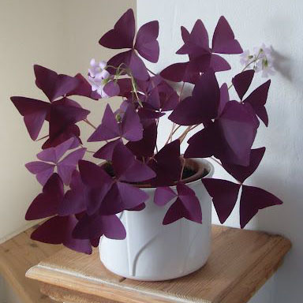
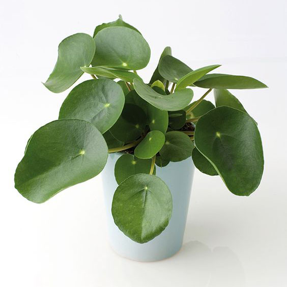

Rubber Plant
Ficus elastica
Ficus, (genus Ficus), a group of about 900 species of trees, shrubs, and vines, commonly called
figs. Native primarily to tropical areas of East Asia, they are distributed throughout the world’s
tropics. Turn the ficus into new pots to spread the greenery to more
places in the home.

Oxalis
Oxalis Griffithii
Oxalis triangularis are highly “photophilic,” which means that they open and close not just their
blooms, but also their leaves in response to light. At night, neatly folded, oxalis triangularis
looks like a cluster of little purple butterflies that then open wide to the morning light.

Pancake plant
Pilea peperomioides
Pancake plant is the plant that fits the one who has poor patience. This elegant plant will keep you
busy for years to come, as it completely shoots out new cuttings for you that you can either
preserve in the same pot to get a fuller plant, or turn into new pots to spread the greenery to more
places in the home.